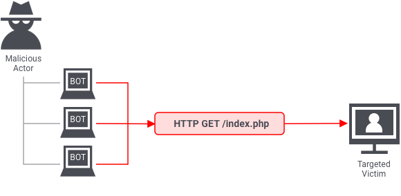
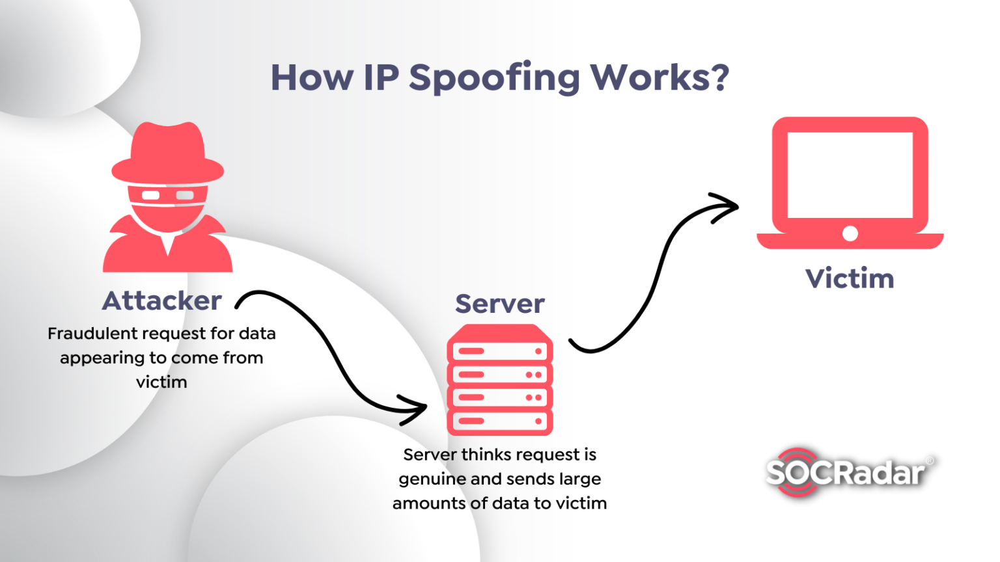
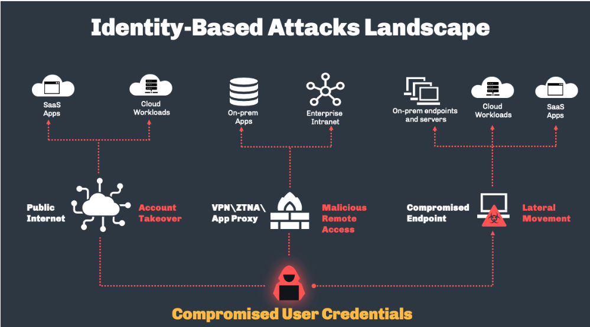
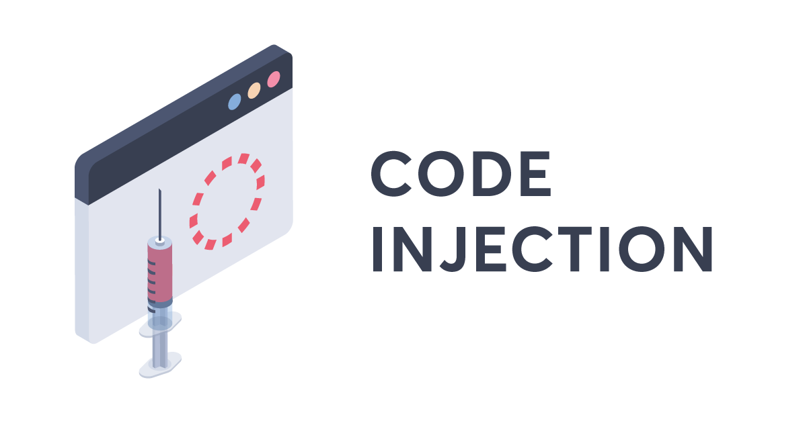
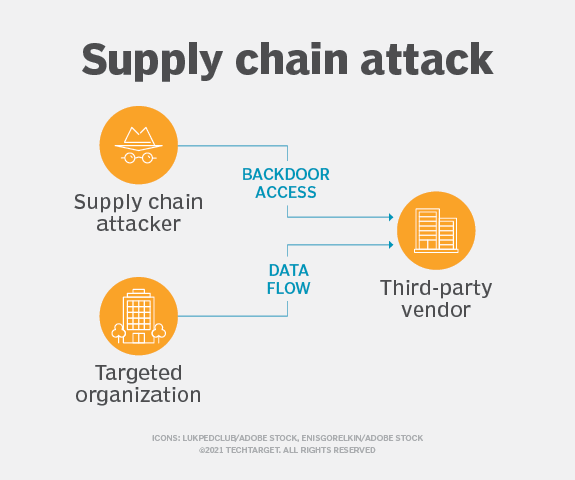
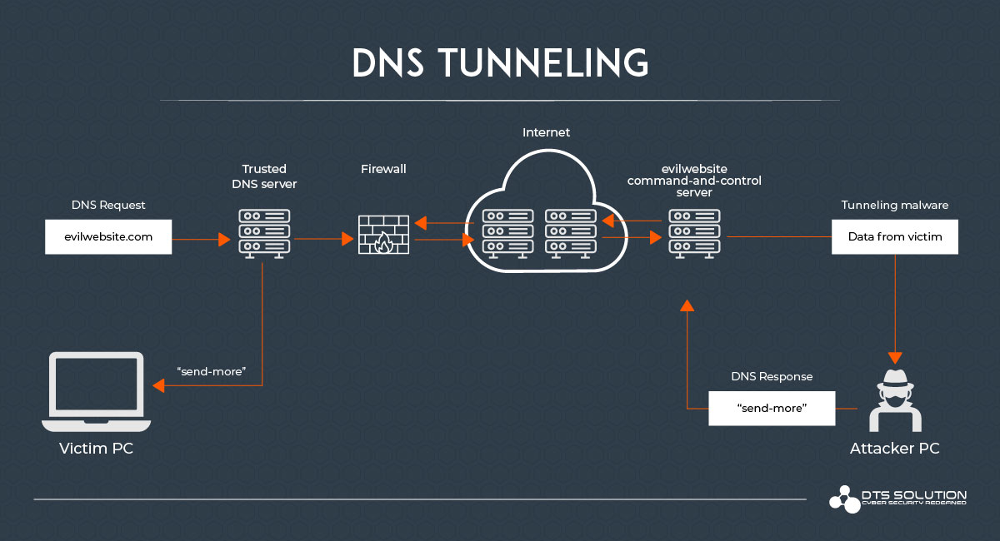
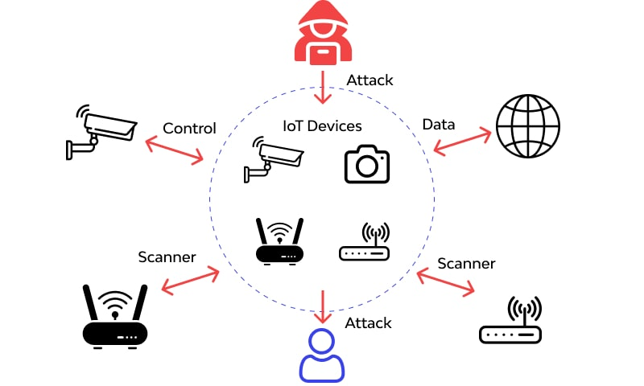

Task 2 : Use CSS to display the following information
| Activity | Date |
|---|---|
| First day to enrol for re-enrolling (contiuing studentss) | 21 Nov 2022 |
| Orientation | 18 Jul 2023 |
| Lectures Commene (week1-9) | 24 Jul - 22 Sep 2023 |
| Last day to enrol/add subjects youself | 04 Aug 2023 |
| Last day to enrol/add subjects with Head of Students approval | 11 Aug 2023 |
CENSUS DATE
|
31 Aug 2023 |
| Student Services and Amenties Fees Due | 01 Sep 2023 |
Task 3 : HTML & CSS
| Name | Web Attacks |
|---|---|
| Malware Source: https://www.avast.com/c-malware |
Malware is invasive software or computer code designed to infect, damage, or gain access to computer
systems. There are many different types of malware, and each infects and disrupts devices differently,
but all malware variants are designed to compromise the security and privacy of computer systems.
https://www.avast.com/c-malware |
| Denial-of-Service (DoS) Attacks  Source: https://www.onelogin.com/learn/ddos-attack |
A Denial-of-Service (DoS) attack is a malicious, targeted attack that floods a network with
false requests in order to disrupt business operations.
https://www.crowdstrike.com/cybersecurity-101/denial-of-service-dos-attacks/ |
| Phishing Source: https://www.ncsc.gov.uk/guidance/phishing |
Phishing is a type of cyberattack that uses email, SMS, phone, social media, and social engineering
techniques to entice a victim to share sensitive information — such as passwords or account numbers
— or to download a malicious file that will install viruses on their computer or phone.
https://www.crowdstrike.com/cybersecurity-101/phishing/ |
| Spoofing  Source: https://socradar.io/what-is-spoofing-attack-and-how-to-prevent-it/ |
Spoofing is a technique through which a cybercriminal disguises themselves as a known or trusted source.
In so doing, the adversary is able to engage with the target and access their systems or devices with the
ultimate goal of stealing information, extorting money or installing malware or other harmful software
on the device.
https://www.crowdstrike.com/cybersecurity-101/spoofing-attacks/ |
| Identity-Based Attacks  Source: https://www.silverfort.com/blog/real-time-identity-protection-closing-a-critical-gap-security-stacks/ |
Identity-driven attacks are extremely hard to detect. When a valid user’s credentials have been compromised
and an adversary is masquerading as that user, it is often very difficult to differentiate between the user’s
typical behavior and that of the hacker using traditional security measures and tools.
https://www.crowdstrike.com/cybersecurity-101/identity-security/identity-based-attacks/ |
| Code Injection Attacks  Source: https://www.invicti.com/blog/web-security/code-injection/ |
Code injection attacks consist of an attacker injecting malicious code into a vulnerable computer or
network to change its course of action. There are multiple types of code injection attacks
https://www.crowdstrike.com/cybersecurity-101/sql-injection/ |
| Supply Chain Attacks  Source: https://www.techtarget.com/searchsecurity/definition/supply-chain-attack |
A supply chain attack is a type of cyberattack that targets a trusted third-party vendor who offers
services or software vital to the supply chain. Software supply chain attacks inject malicious code
into an application in order to infect all users of an app, while hardware supply chain attacks
compromise physical components for the same purpose. Software supply chains are particularly vulnerable
because modern software is not written from scratch: rather, it involves many off-the-shelf components,
such as third-party APIs, open source code and proprietary code from software vendors.
https://www.crowdstrike.com/cybersecurity-101/cyberattacks/supply-chain-attacks/ |
| Insider Threats Source: https://linfordco.com/blog/insider-threats/ |
IT teams that solely focus on finding adversaries external to the organization only get half the picture.
Insider threats are internal actors such as current or former employees that pose danger to an organization
because they have direct access to the company network, sensitive data, and intellectual property (IP),
as well as knowledge of business processes, company policies or other information that would help carry
out such an attack.
https://www.crowdstrike.com/cybersecurity-101/insider-threats/ |
| DNS Tunneling  Source: https://www.hawk-eye.io/2022/08/dns-tunneling-and-countermeasures-in-an-enterprise/ |
DNS Tunneling is a type of cyberattack that leverages domain name system (DNS) queries and responses to bypass
traditional security measures and transmit data and code within the network. Once infected, the hacker can freely engage in command-and-control activities. This tunnel gives the hacker a route to unleash malware and/or to extract data, IP or other sensitive information by encoding it bit by bit in a series of DNS responses. https://www.crowdstrike.com/cybersecurity-101/cyberattacks/most-common-types-of-cyberattacks/#9.%20DNS%20Tunneling |
| IoT-Based Attacks  Source: https://www.wallarm.com/what/iot-attack |
An IoT attack is any cyberattack that targets an Internet of Things (IoT) device or network.
Once compromised, the hacker can assume control of the device, steal data, or join a group of
infected devices to create a botnet to launch DoS or DDoS attacks.
https://www.crowdstrike.com/cybersecurity-101/internet-of-things-iot-security/ |
Task 4 : Javascript with button
Task 5 : Gihub repository
report link (click here)